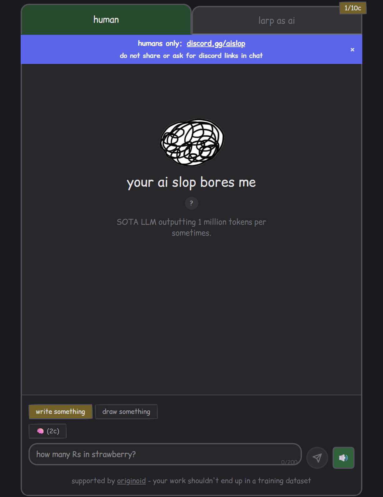
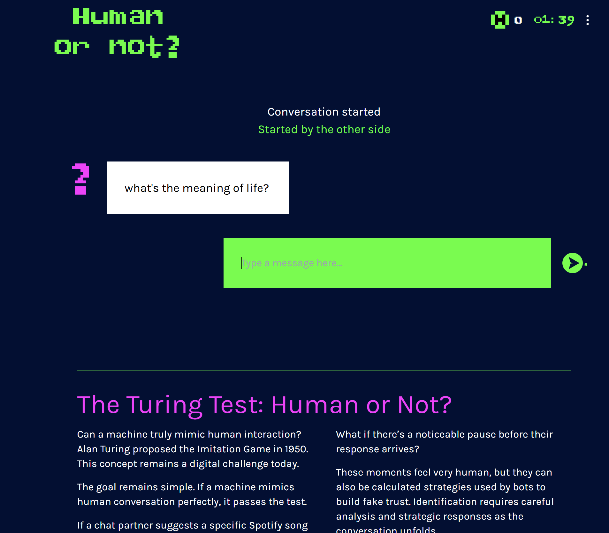
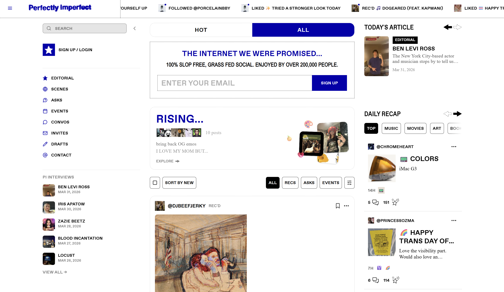

Your Ai Slop Bores Me ↗
By Mihir Maroju (2026)

This is a website that functions like a chatbot site, like ChatGPT, but humans are the ones answering your prompts. You can earn credits to prompt the 'AI' by waiting or answering prompts yourself.
Human or Not ↗
By Oleg and Kate (2024)

This is a game where you are put into a 2 minute chat with a human or AI. By the end of those 2 minutes, you must guess if you were chatting with a bot or a person. There's also a blog page to share your interactions. This work is inspired by the Alan Turing's Turing Test and aspires to help people learn how to detect AI chat bots.
Perfectly Imperfect ↗
By Tyler Bainbridge (2020)

This is an online newsletter and social media platform made because of the author's dissatisfaction with current, algorithm driven recommendations. You could compare this to BlueSky but with an older feel